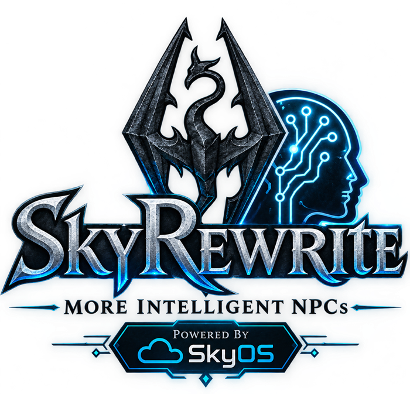

World history
Read visible journal entries such as deaths, location changes, quest events, item actions, crimes, consumption, spell learning, shouts, perks, and discoveries.

MODDER REFERENCE · API VERSION 1
Read retained world-history events, including brawl, disenchantment, and crafting records, and query active Skyrim hold bounties from a versioned C ABI.
The header exposes a small, versioned C ABI from SkyRewrite.dll. Your plugin can read retained player events and active hold bounties without linking against SkyRewrite's C++ internals or shipping an import library. The API is read-only; SkyRewrite remains the owner of its journal and bounty systems.
Read visible journal entries such as deaths, location changes, quest events, item actions, crimes, consumption, spell learning, shouts, perks, and discoveries.
Read the current violent and nonviolent crime balances for holds that have an active balance.
Resolve exported functions dynamically and verify the API version before using data structures.
SkyRewriteAPI.h.SkyRewrite.dll's module handle and resolve the API once during plugin initialization.Threading: journal event access is protected by SkyRewrite's journal lock. The active-bounty accessors read Skyrim engine state and must run on Skyrim's game thread. Do not call them from a worker thread.
#include <windows.h>
#include "SkyRewriteAPI.h"
SkyRewriteAPI g_skyRewrite{};
bool ConnectSkyRewrite()
{
const HMODULE module = GetModuleHandleW(L"SkyRewrite.dll");
return SkyRewrite_LoadAPI(module, &g_skyRewrite) != 0;
}
void ReadRecentEvents()
{
if (!g_skyRewrite.getVisibleEventCount) return;
const uint32_t count = g_skyRewrite.getVisibleEventCount();
const uint32_t limit = count < 10 ? count : 10;
for (uint32_t i = 0; i < limit; ++i) {
SkyRewriteEventV1 event{};
event.structSize = sizeof(event);
if (!g_skyRewrite.getVisibleEventAt(i, &event)) continue;
// Use event.eventType, event.subject, event.detail,
// event.formID, event.location, and event.identity.
}
}Call ConnectSkyRewrite after SKSE has loaded the plugins. Keep the module handle and function pointers only while the module remains loaded.
| Field | Meaning |
|---|---|
structSize | Set to sizeof(SkyRewriteEventV1) before calling the accessor. |
eventType | SkyRewrite's journal type code. Use the named constants in SkyRewriteAPI.h when available; unknown future codes should be ignored safely. |
gameDay | In-game day when known; negative means unavailable. |
formID, baseFormID | Referenced form and base form IDs, when the event has them. |
locationFormID, location | Location form ID and saved display name. |
formPlugin, basePlugin, locationPlugin | Owning plugin labels when known. |
stage | Event-specific stage or packed state value. |
subject, detail | Readable event summary and explanation. |
identity | Stable journal identity used by SkyRewrite to associate related responses. |
The header defines named values 30–45: SKYREWRITE_EVENT_EQUIPPED, SKYREWRITE_EVENT_UNEQUIPPED, SKYREWRITE_EVENT_SKILL_INCREASED, SKYREWRITE_EVENT_LEVEL_INCREASED, SKYREWRITE_EVENT_BOOK_READ, SKYREWRITE_EVENT_INGREDIENT_EFFECT_LEARNED, SKYREWRITE_EVENT_FOLLOWER_STARTED, SKYREWRITE_EVENT_FOLLOWER_STOPPED, SKYREWRITE_EVENT_ITEM_SMITHED, SKYREWRITE_EVENT_ITEM_TANNED, SKYREWRITE_EVENT_POTION_CRAFTED, SKYREWRITE_EVENT_ITEM_ENCHANTED, SKYREWRITE_EVENT_CRAFT_MATERIAL_USED, SKYREWRITE_EVENT_ITEM_COOKED, SKYREWRITE_EVENT_ITEM_DISENCHANTED (44), and SKYREWRITE_EVENT_BRAWL (45). For brawls, stage 1 means the player won and stage 2 means the player lost; the identity is SkyRewrite/Brawl/v1/won or SkyRewrite/Brawl/v1/lost. Use subject, detail, IDs, and location as event-specific data; do not infer a field's meaning for other event types.
Includes the hold key and display name, crime-faction FormID and owner plugin, and violent, nonviolent, and total septim balances. The API lists only holds with a nonzero bounty.
The accessor outputs are fixed-size, null-terminated structures. Always set structSize first. A zero return means the index was unavailable or the structure was too small.
| Function pointer | Purpose |
|---|---|
getAPIVersion() | Returns the public ABI version. Version 1 is 1. |
getVisibleEventCount() | Returns the number of visible saved journal events. |
getVisibleEventAt(index, out) | Copies one event; index zero is newest. |
getActiveGameBountyCount() | Returns the number of holds with a nonzero crime balance. Game thread only. |
getActiveGameBountyAt(index, out) | Copies one current hold balance. Game thread only. |
All five functions are resolved by SkyRewrite_LoadAPI; no exported C++ object or STL type crosses the API boundary.
Build a searchable journal or a tavern storyteller's account from saved actions and places.
Show recent events for the current hold and use current bounty balances to explain guard attention.
Combine quest-start and quest-completion events with a mod's own quest UI or journal.
Use history signals to enrich a separate mod's dialogue or contextual messages while leaving SkyRewrite's score and reactions untouched.
Present a mod-owned alert when a new theft or bounty event is recorded, with a link to the relevant hold.
Pair location and travel records with an atlas, map journal, or exploration checklist.